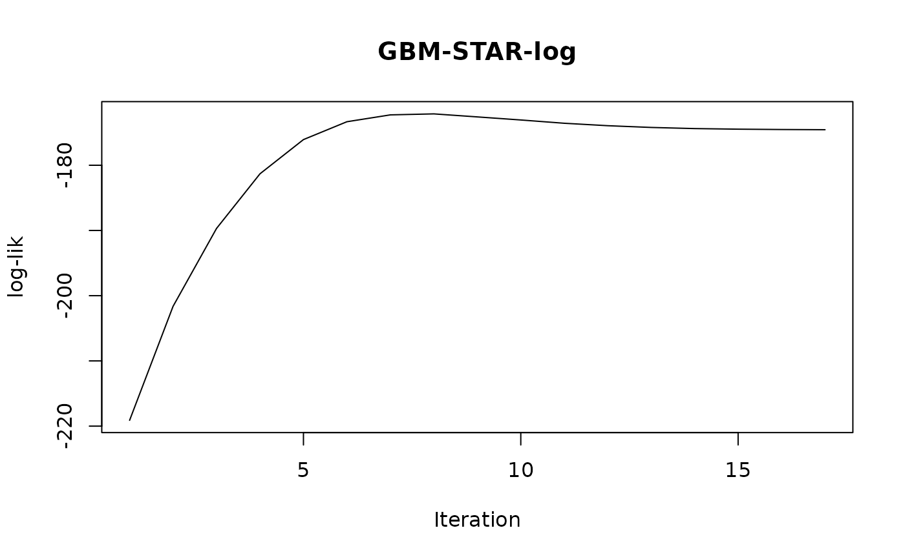
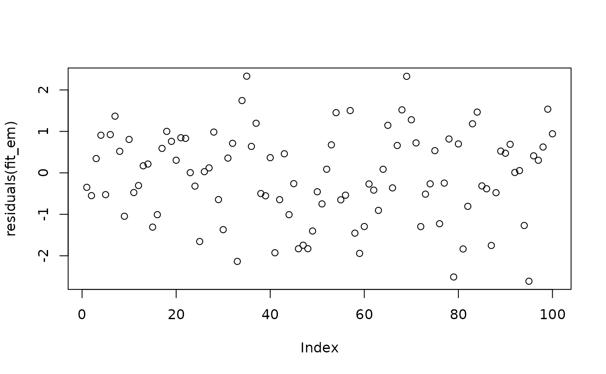
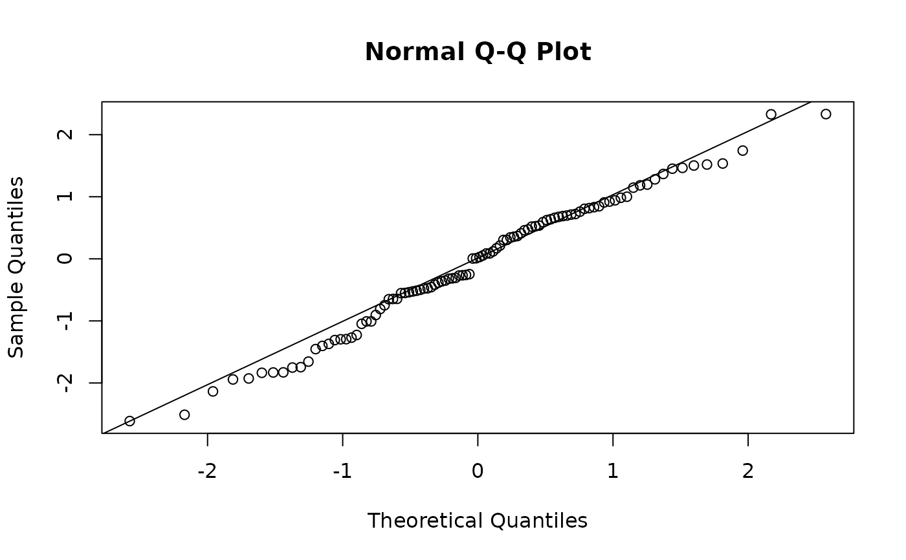
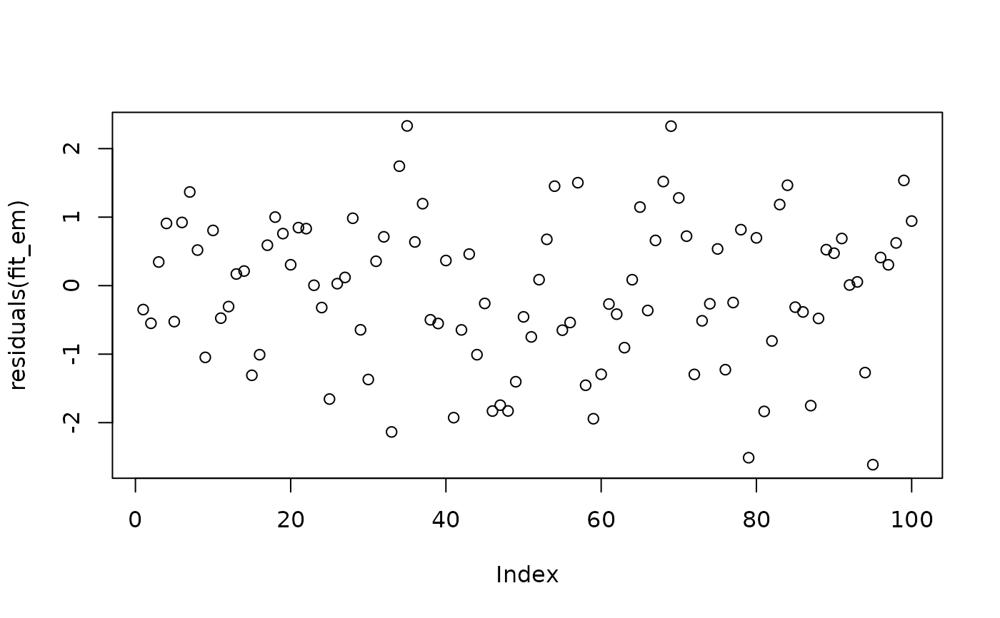
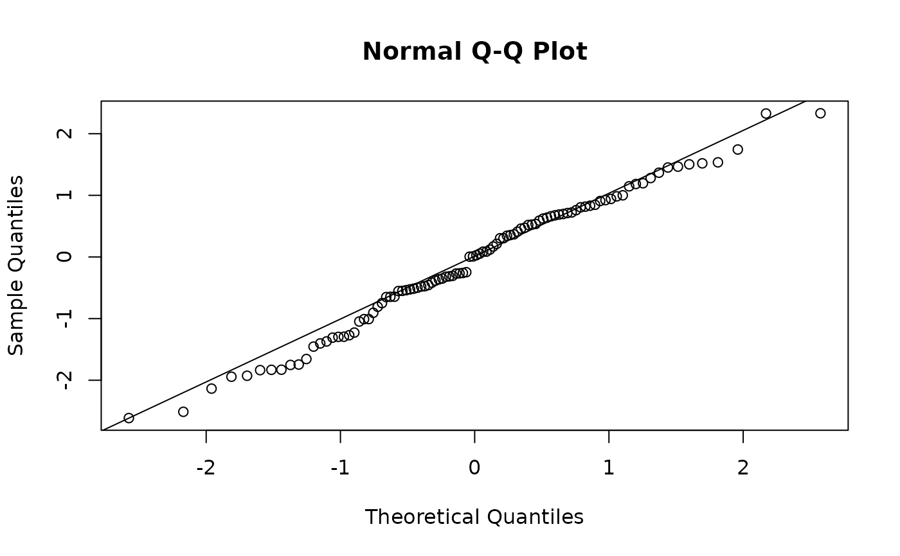

Compute the MLEs and log-likelihood for the Gradient Boosting Machines (GBM) STAR model.
The STAR model requires a *transformation* and an *estimation function* for the conditional mean
given observed data. The transformation can be known (e.g., log or sqrt) or unknown
(Box-Cox or estimated nonparametrically) for greater flexibility.
The estimator in this case is a GBM.
Standard function calls including fitted and residuals apply.
Usage
gbm_star(
y,
X,
X.test = NULL,
transformation = "np",
y_max = Inf,
sd_init = 10,
tol = 10^-10,
max_iters = 1000,
n.trees = 100,
interaction.depth = 1,
shrinkage = 0.1,
bag.fraction = 1
)Arguments
- y
n x 1vector of observed counts- X
n x pmatrix of predictors- X.test
m x pmatrix of out-of-sample predictors- transformation
transformation to use for the latent data; must be one of
"identity" (identity transformation)
"log" (log transformation)
"sqrt" (square root transformation)
"np" (nonparametric transformation estimated from empirical CDF)
"pois" (transformation for moment-matched marginal Poisson CDF)
"neg-bin" (transformation for moment-matched marginal Negative Binomial CDF)
"box-cox" (box-cox transformation with learned parameter)
- y_max
a fixed and known upper bound for all observations; default is
Inf- sd_init
add random noise for EM algorithm initialization scaled by
sd_inittimes the Gaussian MLE standard deviation; default is 10- tol
tolerance for stopping the EM algorithm; default is 10^-10;
- max_iters
maximum number of EM iterations before stopping; default is 1000
- n.trees
Integer specifying the total number of trees to fit. This is equivalent to the number of iterations and the number of basis functions in the additive expansion. Default is 100.
- interaction.depth
Integer specifying the maximum depth of each tree (i.e., the highest level of variable interactions allowed). A value of 1 implies an additive model, a value of 2 implies a model with up to 2-way interactions, etc. Default is 1.
- shrinkage
a shrinkage parameter applied to each tree in the expansion. Also known as the learning rate or step-size reduction; 0.001 to 0.1 usually work, but a smaller learning rate typically requires more trees. Default is 0.1.
- bag.fraction
the fraction of the training set observations randomly selected to propose the next tree in the expansion. This introduces randomnesses into the model fit. If bag.fraction < 1 then running the same model twice will result in similar but different fits. Default is 1 (for a deterministic prediction).
Value
a list with the following elements:
fitted.values: the fitted values at the MLEs (training)fitted.values.test: the fitted values at the MLEs (testing)g.hata function containing the (known or estimated) transformationsigma.hatthe MLE of the standard deviationmu.hatthe MLE of the conditional mean (on the transformed scale)z.hatthe estimated latent data (on the transformed scale) at the MLEsresidualsthe Dunn-Smyth residuals (randomized)residuals_repthe Dunn-Smyth residuals (randomized) for 10 replicateslogLikthe log-likelihood at the MLEslogLik0the log-likelihood at the MLEs for the *unrounded* initializationlambdathe Box-Cox nonlinear parametergbmObj: the object returned by gbm() at the MLEsand other parameters that (1) track the parameters across EM iterations and (2) record the model specifications
Details
STAR defines a count-valued probability model by (1) specifying a Gaussian model for continuous *latent* data and (2) connecting the latent data to the observed data via a *transformation and rounding* operation. The Gaussian model in this case is a GBM.
Note
Infinite latent data values may occur when the transformed Gaussian model is highly inadequate. In that case, the function returns the *indices* of the data points with infinite latent values, which are significant outliers under the model. Deletion of these indices and re-running the model is one option, but care must be taken to ensure that (i) it is appropriate to treat these observations as outliers and (ii) the model is adequate for the remaining data points.
References
Kowal, D. R., & Wu, B. (2021). Semiparametric count data regression for self‐reported mental health. Biometrics. doi:10.1111/biom.13617
Examples
# Simulate data with count-valued response y:
sim_dat = simulate_nb_friedman(n = 100, p = 10)
y = sim_dat$y; X = sim_dat$X
# EM algorithm for STAR (using the log-link)
fit_em = gbm_star(y = y, X = X,
transformation = 'log')
# Evaluate convergence:
plot(fit_em$logLik_all, type='l', main = 'GBM-STAR-log', xlab = 'Iteration', ylab = 'log-lik')

# Fitted values:
y_hat = fitted(fit_em)
plot(y_hat, y);
 # Residuals:
plot(residuals(fit_em))

qqnorm(residuals(fit_em)); qqline(residuals(fit_em))

# Log-likelihood at MLEs:
fit_em$logLik
#> [1] -174.3085
# Residuals:
plot(residuals(fit_em))

qqnorm(residuals(fit_em)); qqline(residuals(fit_em))

# Log-likelihood at MLEs:
fit_em$logLik
#> [1] -174.3085